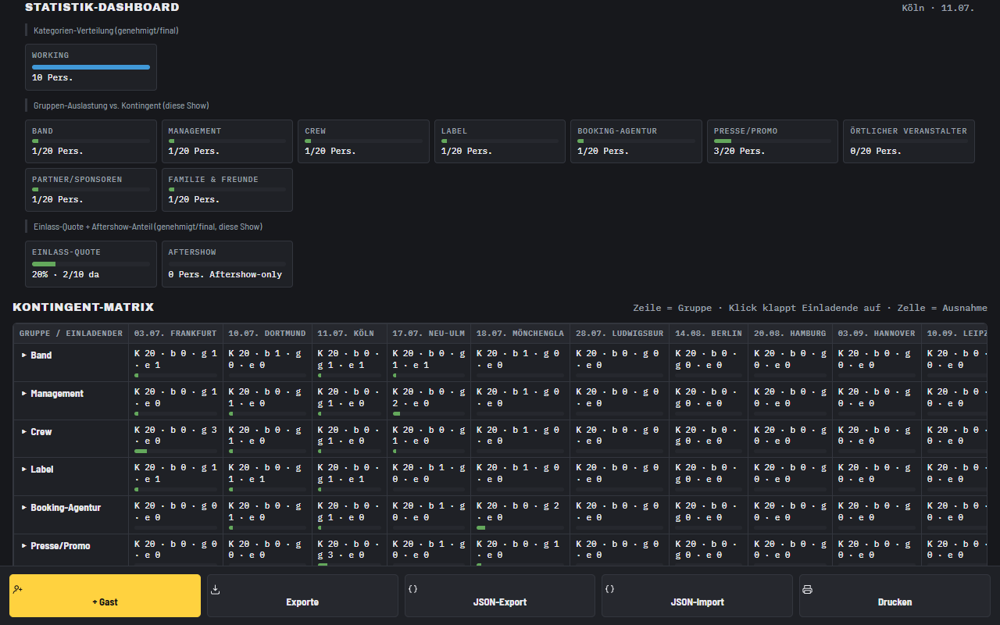
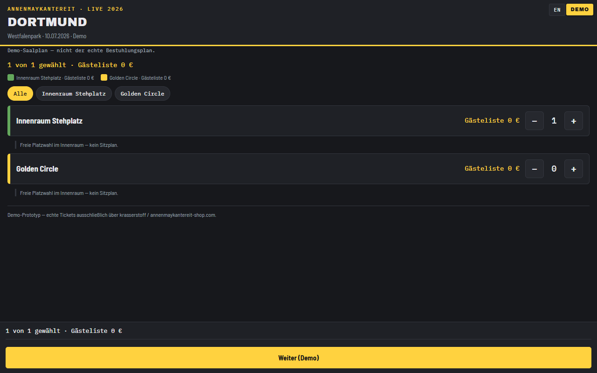
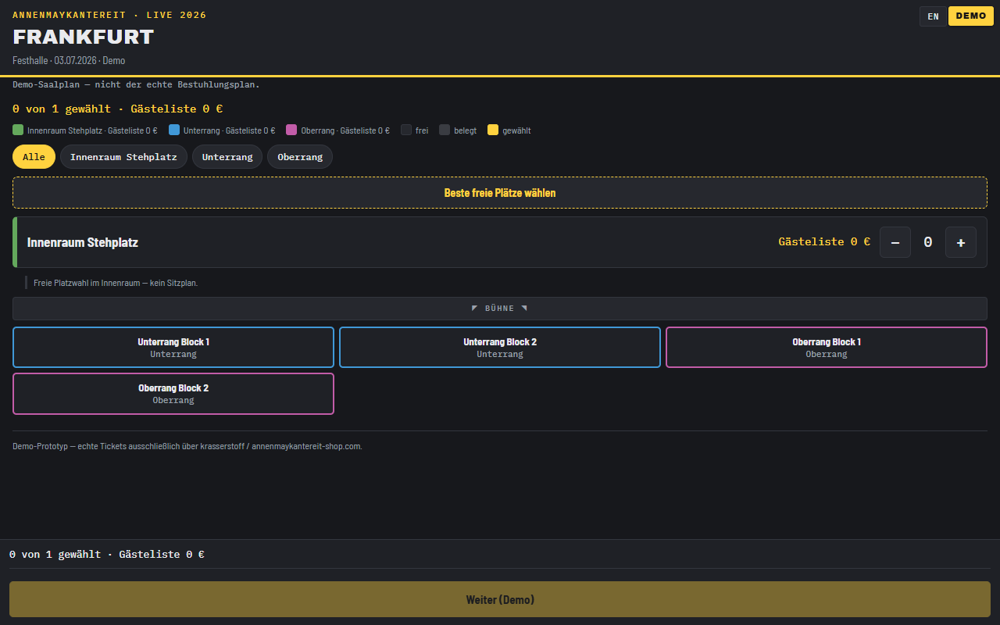
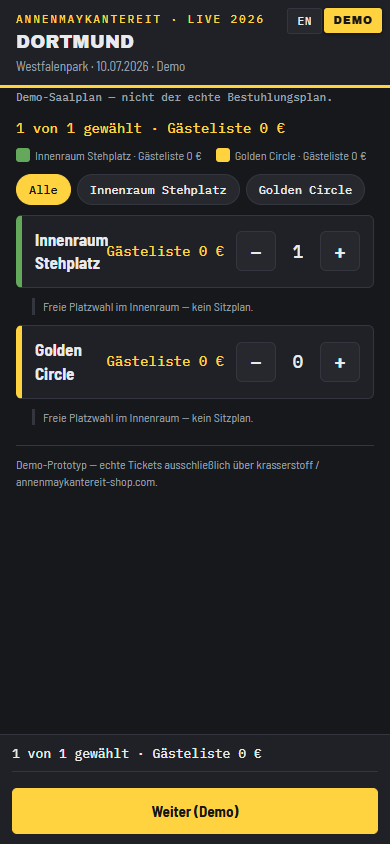
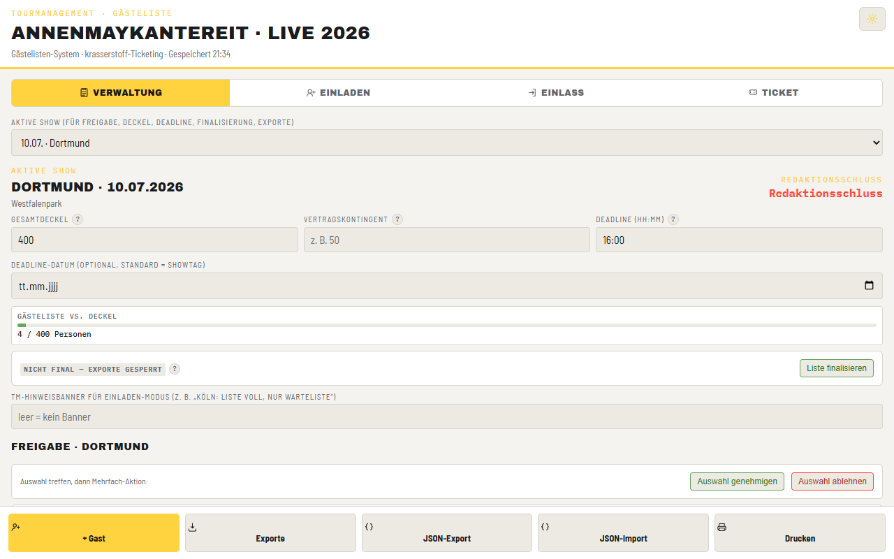

Was ist das?
AMK Gästeliste PRO ist das Gästelisten-System für die Tour „AnnenMayKantereit · Live 2026". Es läuft komplett offline im Browser, ganz ohne eigenen Server oder Internetverbindung — das Herzstück ist die Datei gaesteliste.html mit den drei Bereichen Verwaltung, Einladen und Einlass, ergänzt um einen Bereich Ticket-Zugang (Demo), der zeigt, wie ein Gast künftig selbst seinen Zugang samt Sitz-/Platzwahl bedienen könnte.
Diese Anleitung führt Schritt für Schritt durch alle Bereiche und zeigt echte Bildschirmfotos aus dem Tool.
Inhalt
1 Schnellstart Windows & Mac
Das Tool ist eine gewöhnliche HTML-Datei und läuft unter Windows wie unter macOS im Browser — ohne Installation. Für beide Systeme liegen fertige Starter bei:
Weg A — Doppelklick auf gaesteliste.html
Der einfachste Weg für den täglichen Einsatz. Einfach im Ordner auf gaesteliste.html doppelklicken — das Tool öffnet sich im Standard-Browser (file://…) und funktioniert vollständig offline, auch ganz ohne Internetverbindung. Alle Eingaben werden lokal im Browser gespeichert (siehe Kapitel 7 „Datensicherung").
Weg B — Start_Windows.bat
Startet einen kleinen lokalen Server auf diesem PC und öffnet das Tool im Browser unter http://localhost. Vorteil: Die vollen PWA-Funktionen (als App installieren, Offline-Cache) funktionieren technisch nur über http://localhost oder https — nicht bei einfachem Doppelklick. Ist auf dem PC kein Python installiert, öffnet das Skript stattdessen automatisch die Datei direkt wie bei Weg A.
Weg C — Mac (Start_Mac.command)
Am Mac genügt ebenfalls der Doppelklick auf gaesteliste.html; das Tool öffnet sich in Safari oder Chrome, alle Funktionen inklusive Speichern stehen zur Verfügung. Wer zusätzlich die Original-Schriften und die PWA-Funktionen möchte, startet Start_Mac.command — das Skript sucht sich einen freien Port, startet den kleinen Server und öffnet den Browser von selbst. Ist auf dem Mac kein Python vorhanden, öffnet es einfach die Datei direkt.
.command-Dateien nicht sofort per Doppelklick zu („nicht überprüft"). Einmalig genügt: Rechtsklick bzw. Ctrl + Klick auf die Datei → Öffnen → im Hinweisfenster nochmals Öffnen. Danach klappt der normale Doppelklick. Startet die Datei gar nicht, hilft einmalig im Terminal: chmod +x "/Pfad/zum/Ordner/Start_Mac.command". Wer sich das sparen will, nimmt Weg A — der funktioniert immer und ohne Rückfrage.2 Handy/Tablet im WLAN (iPhone, iPad, Android)
Auf iPhone, iPad oder Android lässt sich das Paket nicht direkt aus der Dateien-App heraus starten — das ist eine Beschränkung der Geräte, kein Fehler des Tools. Der Weg dorthin führt über den Server-Starter auf einem PC oder Mac im selben WLAN:
- Windows:
Start_Server_Handy.bat - Mac:
Start_Server_Handy_Mac.command(beim ersten Start Rechtsklick → „Öffnen", siehe Kapitel 1)
Beide zeigen eine Adresse wie http://192.168.x.x:8765 an — diese Adresse am Handy oder Tablet im Browser eingeben.
Auf dem Home-Bildschirm installieren
- iOS (iPhone/iPad): Seite im Safari-Browser öffnen → Teilen-Symbol → „Zum Home-Bildschirm".
- Android/Edge: Seite öffnen → Menü (⋮) → „App installieren" bzw. „Zum Startbildschirm hinzufügen".
Ehrliche PWA-Grenze
Voll-Offline-Betrieb (Installation als App mit eigenem Icon und Offline-Cache) funktioniert technisch nur über https oder localhost. Der WLAN-Zugriff per http://192.168.x.x:8765 ist kein localhost und kein https — deshalb greifen dort die vollen PWA-Funktionen (Installierbarkeit, Offline-Cache) nur eingeschränkt oder gar nicht. Die Seite selbst funktioniert trotzdem ganz normal im Browser, solange der Server auf PC oder Mac läuft.
3 Die drei Modi + Ticket-Tab
Oben im Tool wechseln vier Tabs zwischen den Bereichen: Verwaltung, Einladen, Einlass und Ticket.
Verwaltung
Der Hauptarbeitsbereich für das Tourmanagement: aktive Show wählen, Gesamtdeckel/Vertragskontingent/Redaktionsschluss pflegen, Anträge freigeben oder ablehnen, die komplette Gästeliste mit Suche und Filtern durchsehen, Liste finalisieren und Exporte anstoßen.

Weiter unten im Verwaltungs-Tab liefert das Statistik-Dashboard auf einen Blick die Kategorien-Verteilung, die Gruppen-Auslastung gegen das jeweilige Kontingent sowie Einlass-Quote und Aftershow-Anteil der aktiven Show. Direkt darunter zeigt die Kontingent-Matrix alle Gruppen gegen alle Shows der Tour — ein Klick auf eine Zeile klappt die zugehörigen Einladenden auf, eine Zelle zeigt Ausnahmen vom Standard-Kontingent.

Einladen
Der reduzierte Bereich für Einladende: nach Auswahl der eigenen Person (tour-internes Vertrauensmodell, keine Login-Pflicht) sieht man nur das eigene Kontingent und die eigenen Gäste — bewusst auf ein 15-Sekunden-Ziel getrimmt: Person wählen, „+ Gast", fertig.

Einlass
Für das Einlass-Personal am Abend: große, gut antippbare Zeilen je Gast, Suche und Kategorie-Filter, Anzeige „X von Y da" bei Gästen mit Begleitung. Der Einlass-Tab zeigt nur finalisierte Shows — eine Liste muss also vorher in der Verwaltung finalisiert werden (siehe Kapitel 5), sonst bleibt die Auswahl leer.

Ticket-Tab
Zeigt und verwaltet die Ticket-Zugänge (Demo) der gewählten Show: neuen Zugang erstellen, bestehende Zugänge per Link/Mail/QR-Code weitergeben, Details ansehen oder widerrufen. Näheres dazu in Kapitel 4.

4 Ticket-Zugang (Demo)
Im Ticket-Tab (Verwaltung-Seite) lässt sich pro Show für einen Gast ein Ticket-Zugang erstellen: E-Mail eintragen, Modus wählen (Kontingent = 0 €, oder Kauf-Demo), maximale Plätze festlegen. Der erzeugte Zugang erscheint in der Tabelle mit den Aktionen Link (Adresse kopieren), Mail (mailto-Versand ans E-Mail-Programm), QR (QR-Code zum Scannen), Details und Widerrufen.
Gast-Sicht — Kontingent/GA (Stehplatz-Bereiche)
Öffnet der Gast seinen Link (gast.html?token=…), sieht er je nach Venue entweder reine Kategorie-Bereiche mit Stepper (bei Stehplatz-Venues wie Festival-Parks) …

Gast-Sicht — Sitzplan (Hallen/Stadien)
… oder bei Hallen/Stadien mit fester Bestuhlung einen Demo-Saalplan mit Legende (frei/belegt/gewählt), Block-Auswahl, Warenkorb-Zeile und dem Button „Beste freie Plätze wählen".

Am Handy
Die Gast-Seite ist für schmale Bildschirme optimiert — genauso, wie ein Gast sie am eigenen Smartphone öffnen würde.

5 Exporte
Über den Toolbar-Button Exporte öffnet sich der Export-Dialog mit vier Exportarten:

| Export | Inhalt |
|---|---|
| (a) Druckliste | Alphabetisch nach Nachname; Farbbalken je Kategorie, Nachname, Vorname, +N Begleitungen, Kategorie, Einladender sowie eine leere Abhak-/Unterschriften-Spalte. Direkt druckbar. |
| (b) CSV Abendkasse | Eine Zeile je Gast (Nachname; Vorname; Begleitungen; Kategorie; Einladender), UTF-8 mit BOM für saubere Umlaute in Excel. |
| (c) CSV krasserstoff-Personalisierung | Eine Zeile pro Person (Hauptgast + jede benannte Begleitung einzeln). Unbenannte Begleitungen erscheinen mit einer Warnung vorab, da bei harter Personalisierung jeder Name auf ein eigenes Ticket muss. |
| (d) Aftershow-Liste | Als Druckansicht und als CSV — alle Gäste mit Aftershow-Kennzeichen plus Kategorie „Aftershow-only". |
Alle Dateien werden mit Show, Version und Zeitstempel benannt, z. B. gaesteliste_koeln_2026-07-11_v2_20260710-1745_krasserstoff.csv — so ist jederzeit nachvollziehbar, welcher Stand exportiert wurde.
6 Optionen
Über das Zahnrad-Symbol „Einstellungen" oben links öffnet sich der Optionen-Dialog:
- Theme Hell/Dunkel — das Tool startet standardmäßig im dunklen Roadcase-Design, kann aber jederzeit auf ein helles Theme umgeschaltet werden (z. B. für draußen bei hellem Tageslicht).
- Schriftgröße S/M/L — für unterschiedliche Bildschirme und Lesegewohnheiten am Einlass.
- Einfach/Profi — der Einfach-Modus blendet Detailfunktionen rein visuell aus und reduziert die Oberfläche auf das Nötigste; der Profi-Modus zeigt alle Funktionen.

Suche, Filter und Mehrfachauswahl
In der Gästeliste (Verwaltung) durchsucht das Suchfeld Name, Begleitung, Einladender und Notiz gleichzeitig. Darunter lassen sich Status (angefragt/genehmigt/abgelehnt/final) und Kategorien als Filter-Chips kombinieren. Über Kontrollkästchen können mehrere Gäste gleichzeitig ausgewählt und per Mehrfach-Aktion genehmigt, abgelehnt, umkategorisiert oder gelöscht werden (nur solange die Liste nicht finalisiert ist).
Undo
Nach Aktionen wie Genehmigen, Ablehnen, Löschen oder Check-in erscheint kurz eine Rückgängig-Möglichkeit — ein Sicherheitsnetz gegen Fehlklicks im hektischen Tour-Alltag.
7 Datensicherung
Alle Daten werden automatisch im Browser gespeichert (localStorage) — der Zeitpunkt des letzten Speicherns steht dezent im Kopfbereich („Gespeichert HH:MM"). Diese automatische Speicherung ist bequem, aber nicht unzerstörbar: Eine Browser-Bereinigung, ein Cache-Reset oder ein Gerätewechsel kann den Stand löschen.
_daten\ ablegen. Das Tool zeigt dazu einmal pro Sitzung einen dezenten Erinnerungshinweis.Ein JSON-Export enthält den kompletten Stand über alle Shows. Über JSON-Import lässt sich eine solche Datei wieder einspielen — vor dem Überschreiben fragt das Tool immer mit der genauen Anzahl an Gästen und Shows zur Bestätigung nach, um Datenverlust durch Versehen zu vermeiden.
8 krasserstoff heute & morgen
Heute ist krasserstoff als offizieller Ticketing-Partner für AnnenMayKantereit · Live 2026 zuständig für echte Tickets, echte Zahlungen und echte Saalpläne. Dieses Paket bildet lediglich eine mögliche künftige Gast-Erfahrung nach — es besteht aktuell keine technische Anbindung an krasserstoff.
Für eine echte Anbindung (z. B. automatischer Ticketversand, echte Sitzplandaten, Zahlungsabwicklung) müssen vorab technische und organisatorische Fragen mit Landstreicher Booking und krasserstoff geklärt werden. Diese Fragen sind vollständig gesammelt in der separaten, eigenständig druck- und speicherbaren Datei:
9 Datenschutz
E-Mail-Adressen von Gästen sind personenbezogene Daten und werden im Tool nur für Ticket-Zugänge erfasst (Kapitel 4) — nur mit Einwilligung der betroffenen Person eintragen. Die E-Mail-Adressen erscheinen sowohl in der Ticket-Zugangstabelle als auch im JSON-Gesamtexport.
Über die Funktion „Show-Daten löschen" in der Verwaltung lassen sich alle Gäste, Ticket-Zugänge und E-Mail-Adressen einer Show vollständig entfernen. Statistik-Zahlen bleiben dabei anonym erhalten — es werden nur Namen und personenbezogene Kontaktdaten gelöscht, nicht die aggregierten Kennzahlen.
10 Künstler/Band wählen & Shows anlegen
Das Tool ist nicht auf eine einzige Band festgelegt. Ganz oben im Tab Verwaltung steht das Auswahlfeld „Künstler / Band · Landstreicher Booking". Ein Klick darauf klappt die Liste aller von Landstreicher Booking vertretenen Künstler und Bands auf — alphabetisch sortiert, 15 Einträge auf einen Blick, der Rest per Scrollen erreichbar. Wer schneller ist: einfach die ersten Buchstaben ins Suchfeld tippen, die Liste filtert sofort mit. Bedienbar auch komplett per Tastatur (Pfeiltasten, Pos1/Ende, Enter zum Übernehmen, Esc zum Schließen).
Was beim Wechsel passiert
Jeder Künstler hat einen eigenen, vollständig getrennten Arbeitsbereich: eigene Shows, Gäste, Kontingente, Ticket-Zugänge und Exporte. Beim Wechsel wird der aktuelle Stand automatisch gespeichert — es geht nichts verloren, und Daten verschiedener Künstler können sich nicht vermischen. Der Name im Kopf der Seite, die Dateinamen der Exporte, die Druckliste und der Text der Ticket-Mail übernehmen den gewählten Künstler automatisch.
Shows anlegen
Ein frisch gewählter Künstler startet mit leerem Tourplan. Über „+ Erste Show anlegen" (bzw. später über Stammdaten & Einstellungen → „Shows verwalten") werden Datum, Stadt und Spielstätte eingetragen. Ab der ersten Show stehen Gästeliste, Freigabe, Finalisierung, Einlass und alle Exporte genauso zur Verfügung wie bei AnnenMayKantereit. Shows lassen sich dort auch nachträglich ändern oder löschen — löschen ist nur möglich, solange keine Gäste oder Ticket-Zugänge daran hängen (sonst zuerst Kapitel 9 „Datenschutz").